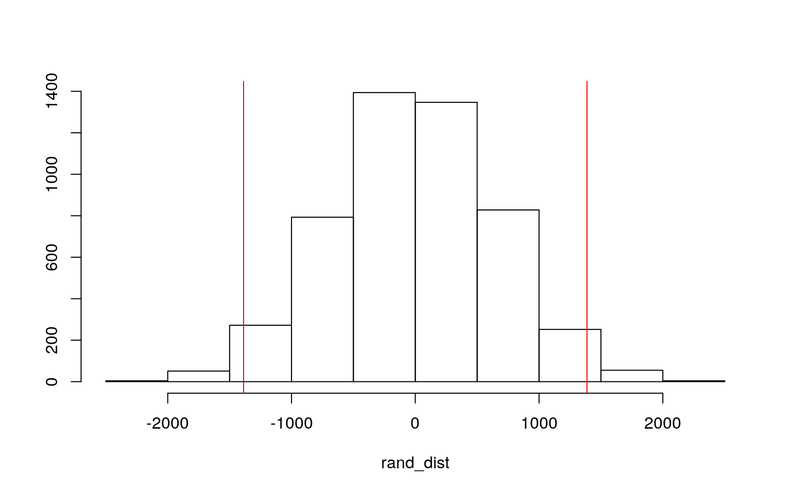

Adrianna Lam asl2429
The dataset chosen for this project is 'medicalcost' and shows different variables of individual patients that could influence the medical charges they recieve for their visit. There are 1338 observations for each of the 7 variables in the dataset: age, sex, bmi, children, smoker, region, and charges. Age is a numeric variable which gives the patient's age. Sex is a categorical variable and tells whether the patient is male or female. BMI is a numeric variable which gives each patient's body mass index. Children is a numeric variable which gives the amount of children each patient has. Smoker is a numeric binary variable, with 1 meaning they are a smoker, and 0 meaning they do not smoke. Region is a categorical variable which gives the locational region within the U.S. where the patient is from, this can be southwest, southeast, northwest, or northeast. Charges is a numeric variable which gives the dollar amount that the patient was charged with for their hospital visit.
library(tidyverse)
library(cluster)
library(ggplot2)
medicalcost <- read_csv("medicalcost.csv")
head(medicalcost)## # A tibble: 6 x 7
## age sex bmi children smoker region charges
## <dbl> <chr> <dbl> <dbl> <chr> <chr> <dbl>
## 1 19 female 27.9 0 yes southwest 16885.
## 2 18 male 33.8 1 no southeast 1726.
## 3 28 male 33 3 no southeast 4449.
## 4 33 male 22.7 0 no northwest 21984.
## 5 32 male 28.9 0 no northwest 3867.
## 6 31 female 25.7 0 no southeast 3757.medicalcost <- medicalcost %>% mutate(smoker = ifelse(smoker == "yes", 1, 0)) #creating binary variablePerform a MANOVA testing whether any of your numeric variables (or a subset of them, if including them all is unreasonable or doesn’t make sense) show a mean difference across levels of one of your categorical variables (3). If they do, perform univariate ANOVAs to find response(s) showing a mean difference across groups (3), and perform post-hoc t tests to find which groups differ (3). Discuss the number of tests you have performed, calculate the probability of at least one type I error (if unadjusted), and adjust the significance level accordingly (bonferroni correction) before discussing significant differences (3). Briefly discuss MANOVA assumptions and whether or not they are likely to have been met (no need for anything too in-depth) (2).
library(rstatix)
group <- medicalcost$region
DVs <- medicalcost %>% select(age, bmi, children, charges)
#Test multivariate normality for each group (null: assumption met)
sapply(split(DVs,group), mshapiro_test)## northeast northwest southeast southwest
## statistic 0.7599805 0.8281628 0.9703858 0.9443837
## p.value 2.038125e-21 2.55156e-18 9.153024e-07
1.030595e-09#Optionally View covariance matrices for each group
lapply(split(DVs,group), cov)## $northeast
## age bmi children charges
## age 197.936963 13.2556509 -0.1270210 4.765802e+04
## bmi 13.255651 35.2540642 -0.1509831 1.548567e+04
## children -0.127021 -0.1509831 1.4374785 9.167089e+02
## charges 47658.022299 15485.6729460 916.7089313
1.266931e+08
##
## $northwest
## age bmi children charges
## age 197.448756 7.420428e+00 1.0510731 5.253344e+04
## bmi 7.420428 2.638635e+01 0.4997541 1.029863e+04
## children 1.051073 4.997541e-01 1.3731814 2.080927e+03
## charges 52533.439553 1.029863e+04 2080.9274445
1.225953e+08
##
## $southeast
## age bmi children charges
## age 200.635455 1.8103630 1.9423909 6.146477e+04
## bmi 1.810363 41.9599227 -0.2628039 1.294097e+04
## children 1.942391 -0.2628039 1.3859777 7.636846e+02
## charges 61464.773377 12940.9708018 763.6845664
1.951916e+08
##
## $southwest
## age bmi children charges
## age 194.8784046 1.687315e+01 -0.1541595 4.168266e+04
## bmi 16.8731510 3.239699e+01 0.4779497 1.466456e+04
## children -0.1541595 4.779497e-01 1.6280532 4.156733e+02
## charges 41682.6584228 1.466456e+04 415.6732833
1.335684e+08man1<-manova(cbind(age,bmi,children,charges)~region, data=medicalcost)
summary(man1) #MANOVA## Df Pillai approx F num Df den Df Pr(>F)
## region 3 0.088794 10.164 12 3999 < 2.2e-16 ***
## Residuals 1334
## ---
## Signif. codes: 0 '***' 0.001 '**' 0.01 '*' 0.05 '.' 0.1
' ' 1summary.aov(man1) #ANOVA## Response age :
## Df Sum Sq Mean Sq F value Pr(>F)
## region 3 47 15.782 0.0798 0.971
## Residuals 1334 263878 197.810
##
## Response bmi :
## Df Sum Sq Mean Sq F value Pr(>F)
## region 3 4056 1351.96 39.495 < 2.2e-16 ***
## Residuals 1334 45664 34.23
## ---
## Signif. codes: 0 '***' 0.001 '**' 0.01 '*' 0.05 '.' 0.1
' ' 1
##
## Response children :
## Df Sum Sq Mean Sq F value Pr(>F)
## region 3 3.13 1.0433 0.7175 0.5416
## Residuals 1334 1939.82 1.4541
##
## Response charges :
## Df Sum Sq Mean Sq F value Pr(>F)
## region 3 1.3008e+09 433586560 2.9696 0.03089 *
## Residuals 1334 1.9477e+11 146007093
## ---
## Signif. codes: 0 '***' 0.001 '**' 0.01 '*' 0.05 '.' 0.1
' ' 1medicalcost%>%group_by(region)%>%summarize(mean(age),mean(bmi),mean(children),mean(charges))## # A tibble: 4 x 5
## region `mean(age)` `mean(bmi)` `mean(children)`
`mean(charges)`
## <chr> <dbl> <dbl> <dbl> <dbl>
## 1 northeast 39.3 29.2 1.05 13406.
## 2 northwest 39.2 29.2 1.15 12418.
## 3 southeast 38.9 33.4 1.05 14735.
## 4 southwest 39.5 30.6 1.14 12347.#post-hoc t test
pairwise.t.test(medicalcost$bmi, medicalcost$region, p.adj="none")##
## Pairwise comparisons using t tests with pooled SD
##
## data: medicalcost$bmi and medicalcost$region
##
## northeast northwest southeast
## northwest 0.9544 - -
## southeast < 2e-16 < 2e-16 -
## southwest 0.0020 0.0024 8.5e-10
##
## P value adjustment method: nonepairwise.t.test(medicalcost$charges, medicalcost$region, p.adj="none")##
## Pairwise comparisons using t tests with pooled SD
##
## data: medicalcost$charges and medicalcost$region
##
## northeast northwest southeast
## northwest 0.2974 - -
## southeast 0.1501 0.0121 -
## southwest 0.2643 0.9406 0.0097
##
## P value adjustment method: none1-0.95^17 #type 1 error## [1] 0.5818797#bonferroni correction
pairwise.t.test(medicalcost$bmi, medicalcost$region, p.adj="bonferroni")##
## Pairwise comparisons using t tests with pooled SD
##
## data: medicalcost$bmi and medicalcost$region
##
## northeast northwest southeast
## northwest 1.000 - -
## southeast < 2e-16 < 2e-16 -
## southwest 0.012 0.014 5.1e-09
##
## P value adjustment method: bonferronipairwise.t.test(medicalcost$charges, medicalcost$region, p.adj="bonferroni")##
## Pairwise comparisons using t tests with pooled SD
##
## data: medicalcost$charges and medicalcost$region
##
## northeast northwest southeast
## northwest 1.000 - -
## southeast 0.901 0.072 -
## southwest 1.000 1.000 0.058
##
## P value adjustment method: bonferroni0.05/17 #bonferroni adjusted significance level## [1] 0.002941176MANOVA assumptions were tested for by testing for multivariate normality for each group and the p value < 0.05, so the assumptions are likely not met. A one-way MANOVA was conducted to determine the effect of region on four dependent numeric variables of age, bmi, children, charges. Significant differences were found across regions for at least one of the numeric variables, P illai trace = 0.088794, pseudo F (12, 3999) = 10.164, p < 0.001. Univariate ANOVAs for each numeric variable were conducted as follow-up tests to the MANOVA. The univariate ANOVAs for two dependent numeric variables were also significant- the bmi reponse: F (3, 1334) = 39.495, p < .0001 and the charges reponse: F (3, 1334) = 2.9696, p < 0.05. Post hoc t tests were performed on these 2 ANOVAs, conducting pairwise comparisons to determine which regions differed in bmi and charges. 1 MANOVA test was done, 4 ANOVAs, and 12 t tests, so 17 tests in total. The overall Type-I error rate is 0.5818797. The boneferroni adjusted significance level of α = .05/17 = 0.002941176 should be used to keep the overall type I error rate at .05. Post hoc analysis was performed with bonferroni adjustment. All of the pairs except for northwest and northeast, differed significantly in bmi. None of the pairs are significant for charges, when the bonferroni correction is used.
Perform some kind of randomization test on your data (that makes sense). The statistic can be anything you want (mean difference, correlation, F-statistic/ANOVA, chi-squared), etc. State null and alternative hypotheses, perform the test, and interpret the results (7). Create a plot visualizing the null distribution and the test statistic (3).
medcost2 <- medicalcost %>% select(sex, charges)
medcost2## # A tibble: 1,338 x 2
## sex charges
## <chr> <dbl>
## 1 female 16885.
## 2 male 1726.
## 3 male 4449.
## 4 male 21984.
## 5 male 3867.
## 6 female 3757.
## 7 female 8241.
## 8 female 7282.
## 9 male 6406.
## 10 female 28923.
## # … with 1,328 more rowsggplot(medcost2,aes(charges,fill=sex))+geom_histogram(bins=6.5)+
facet_wrap(~sex,ncol=2)+theme(legend.position="none")set.seed(348)
medcost2 %>% group_by(sex) %>% summarize(means = mean(charges)) %>%
summarize(diff(means))## # A tibble: 1 x 1
## `diff(means)`
## <dbl>
## 1 1387.#randomization test
rand_dist<-vector()
for(i in 1:5000){
new<-data.frame(charges=sample(medcost2$charges),sex=medcost2$sex)
rand_dist[i]<-mean(new[new$sex=="female",]$charges)-
mean(new[new$sex=="male",]$charges)}
mean(rand_dist < -1387.172 | rand_dist > 1387.172)## [1] 0.037{hist(rand_dist,main="",ylab=""); abline(v = c(-1387.172, 1387.172),col="red")} A randomization test for the mean difference of charges based on sex is conducted. The null hypothesis is that the mean charges are the same for female and male patients. The alternative hypothesis is that the mean charges are different for female and male patients. The two tailed p-value for the randomization test is p = 0.037. Since p < 0.05, it can be concluded that there is a significant difference in mean charges between sexes, and the null hypothesis is rejected.
Build a linear regression model predicting one of your response variables from at least 2 other variables, including their interaction. Mean-center any numeric variables involved in the interaction.
Interpret the coefficient estimates (do not discuss significance) (10) Plot the regression using ggplot() using geom_smooth(method=“lm”). If your interaction is numeric by numeric, refer to code in the slides to make the plot or check out the interactions package, which makes this easier. If you have 3 or more predictors, just chose two of them to plot for convenience. (8) Check assumptions of linearity, normality, and homoskedasticity either graphically or using a hypothesis test (4) Regardless, recompute regression results with robust standard errors via coeftest(..., vcov=vcovHC(...)). Discuss significance of results, including any changes from before/after robust SEs if applicable. (8) What proportion of the variation in the outcome does your model explain? (4)
#mean centering numeric variables
medicalcost$charges_c <- (medicalcost$charges - mean(medicalcost$charges,
na.rm = T))
medicalcost$bmi_c <- (medicalcost$bmi - mean(medicalcost$bmi,
na.rm = T))
#linear regression
fit<-lm(charges_c ~ bmi_c*sex, data=medicalcost); summary(fit)##
## Call:
## lm(formula = charges_c ~ bmi_c * sex, data =
medicalcost)
##
## Residuals:
## Min 1Q Median 3Q Max
## -23378 -8115 -3819 4773 48914
##
## Coefficients:
## Estimate Std. Error t value Pr(>|t|)
## (Intercept) -615.97 461.30 -1.335 0.182008
## bmi_c 297.12 76.27 3.896 0.000103 ***
## sexmale 1168.85 648.97 1.801 0.071914 .
## bmi_c:sexmale 179.96 106.49 1.690 0.091273 .
## ---
## Signif. codes: 0 '***' 0.001 '**' 0.01 '*' 0.05 '.' 0.1
' ' 1
##
## Residual standard error: 11860 on 1334 degrees of
freedom
## Multiple R-squared: 0.0437, Adjusted R-squared: 0.04155
## F-statistic: 20.32 on 3 and 1334 DF, p-value: 7.029e-13#plot
ggplot(medicalcost, aes(x=bmi_c, y=charges_c,group=sex))+geom_point(aes(color=sex))+
geom_smooth(method="lm",aes(color=sex))#check assumptions of linearity, homoskedasticity
resids<-fit$residuals
fitvals<-fit$fitted.values
ggplot()+geom_point(aes(fitvals,resids))+geom_hline(yintercept=0, color='red')library(sandwich)
library(lmtest)
bptest(fit)##
## studentized Breusch-Pagan test
##
## data: fit
## BP = 127.08, df = 3, p-value < 2.2e-16#normality
ks.test(resids, "pnorm", mean=0, sd(resids))##
## One-sample Kolmogorov-Smirnov test
##
## data: resids
## D = 0.17007, p-value < 2.2e-16
## alternative hypothesis: two-sided#robust standard errors
coeftest(fit, vcov = vcovHC(fit))##
## t test of coefficients:
##
## Estimate Std. Error t value Pr(>|t|)
## (Intercept) -615.972 439.563 -1.4013 0.1613486
## bmi_c 297.118 81.187 3.6597 0.0002624 ***
## sexmale 1168.847 648.293 1.8030 0.0716197 .
## bmi_c:sexmale 179.961 116.525 1.5444 0.1227292
## ---
## Signif. codes: 0 '***' 0.001 '**' 0.01 '*' 0.05 '.' 0.1
' ' 1#proportion of variation in outcome
(sum((medicalcost$charges_c-mean(medicalcost$charges_c))^2)-sum(fit$residuals^2))/sum((medicalcost$charges_c-mean(medicalcost$charges_c))^2)## [1] 0.04370452Controlling for sex, for every 1 unit increase of bmi_c, charges_c increases by 297.12 dollars (significant, t = 3.896, df = 1334, p = 0.000103). Controlling for bmi_c, males have charges that are $1168.85 greater than females. (not signifianct, t = 1.801, df = 1334, p = 0.071914). The slope for bmi_c on charges_c is 179.96 dollars greater for males compared to females (interaction is not significant, t = 1.690, df = 1334, p = 0.091273). Assumptions of linearity, normality, and homoskedasticity are not met because p < 0.05. Regression is recomputed using the robust standard errors. Controlling for sex, there is a significant interaction between bmi_c and charges_c (t = 3.6597, p = 0.0002624). There are no changes in significance after the robust SEs. The model explains 0.04370452 of the variation in the outcome.
Rerun same regression model (with the interaction), but this time compute bootstrapped standard errors (either by resampling observations or residuals). Discuss any changes you observe in SEs and p-values using these SEs compared to the original SEs and the robust SEs)
#linear regression
fit<-lm(charges_c ~ bmi_c*sex, data=medicalcost); summary(fit)##
## Call:
## lm(formula = charges_c ~ bmi_c * sex, data =
medicalcost)
##
## Residuals:
## Min 1Q Median 3Q Max
## -23378 -8115 -3819 4773 48914
##
## Coefficients:
## Estimate Std. Error t value Pr(>|t|)
## (Intercept) -615.97 461.30 -1.335 0.182008
## bmi_c 297.12 76.27 3.896 0.000103 ***
## sexmale 1168.85 648.97 1.801 0.071914 .
## bmi_c:sexmale 179.96 106.49 1.690 0.091273 .
## ---
## Signif. codes: 0 '***' 0.001 '**' 0.01 '*' 0.05 '.' 0.1
' ' 1
##
## Residual standard error: 11860 on 1334 degrees of
freedom
## Multiple R-squared: 0.0437, Adjusted R-squared: 0.04155
## F-statistic: 20.32 on 3 and 1334 DF, p-value: 7.029e-13#boostrapped SEs
resids<-fit$residuals
fitted<-fit$fitted.values
resid_resamp<-replicate(5000,{
new_resids<-sample(resids,replace=TRUE)
medicalcost$new_y<-fitted+new_resids
fit2 <- lm(new_y~bmi_c*sex,data=medicalcost)
coef(fit2)
})
resid_resamp%>%t%>%as.data.frame%>%summarize_all(sd)## (Intercept) bmi_c sexmale bmi_c:sexmale
## 1 459.2582 76.00803 650.6185 106.3192#normal SEs
coeftest(fit)##
## t test of coefficients:
##
## Estimate Std. Error t value Pr(>|t|)
## (Intercept) -615.972 461.301 -1.3353 0.1820078
## bmi_c 297.118 76.271 3.8956 0.0001028 ***
## sexmale 1168.847 648.966 1.8011 0.0719143 .
## bmi_c:sexmale 179.961 106.489 1.6899 0.0912728 .
## ---
## Signif. codes: 0 '***' 0.001 '**' 0.01 '*' 0.05 '.' 0.1
' ' 1#robust SEs
coeftest(fit, vcov=vcovHC(fit))##
## t test of coefficients:
##
## Estimate Std. Error t value Pr(>|t|)
## (Intercept) -615.972 439.563 -1.4013 0.1613486
## bmi_c 297.118 81.187 3.6597 0.0002624 ***
## sexmale 1168.847 648.293 1.8030 0.0716197 .
## bmi_c:sexmale 179.961 116.525 1.5444 0.1227292
## ---
## Signif. codes: 0 '***' 0.001 '**' 0.01 '*' 0.05 '.' 0.1
' ' 1The bootstrapped SEs are 76.52447 for bmi_c, 645.6866 for sexmale, and 107.9064 for bmi_c:sexmale. These are slightly greater than the original SEs of 76.271 for bmi_c, 648.966 for sexmale, and 106.489 for bmi_c:sexmale. The robust SEs differ slightly from the bootstrapped SEs, the bmi_c SE is greater at 81.187, the sexmale SE is lower at 648.293, and the bmi_c:sexmale SE is greater at 116.525. In the bootstrapped regression, the bmi_c p-value is 0.000161 (significant), the sexmale p-value is 0.295017 (not significant), and the bmi_c:sexmale p-value is 0.078581 (not significant). These p-values differ from the original p-values, where the bmi_c p-value is 0.000103 (significant), the sexmale p-value is 0.071914 (not significant), and the bmi_c:sexmale p-value is 0.091273 (not significant).
Fit a logistic regression model predicting a binary variable (if you don’t have one, make/get one) from at least two explanatory variables (interaction not necessary).
Interpret coefficient estimates in context (10) Report a confusion matrix for your logistic regression (2) Compute and discuss the Accuracy, Sensitivity (TPR), Specificity (TNR), Precision (PPV), and AUC of your model (5) Using ggplot, make a density plot of the log-odds (logit) colored/grouped by your binary outcome variable (3) Generate an ROC curve (plot) and calculate AUC (either manually or with a package); interpret (5)
#mean center age
medicalcost$age_c <- (medicalcost$age - mean(medicalcost$age, na.rm = T))
#logisitic regression
fit3 <- glm(smoker ~ charges_c+age_c, data = medicalcost, family = binomial(link = "logit"))
summary(fit3)##
## Call:
## glm(formula = smoker ~ charges_c + age_c, family =
binomial(link = "logit"),
## data = medicalcost)
##
## Deviance Residuals:
## Min 1Q Median 3Q Max
## -2.6595 -0.1817 -0.1610 -0.1395 1.8680
##
## Coefficients:
## Estimate Std. Error z value Pr(>|z|)
## (Intercept) -2.409e+00 1.608e-01 -14.976 < 2e-16 ***
## charges_c 2.948e-04 1.925e-05 15.316 < 2e-16 ***
## age_c -8.615e-02 1.064e-02 -8.099 5.54e-16 ***
## ---
## Signif. codes: 0 '***' 0.001 '**' 0.01 '*' 0.05 '.' 0.1
' ' 1
##
## (Dispersion parameter for binomial family taken to be 1)
##
## Null deviance: 1356.63 on 1337 degrees of freedom
## Residual deviance: 420.33 on 1335 degrees of freedom
## AIC: 426.33
##
## Number of Fisher Scoring iterations: 7exp(coef(fit3))## (Intercept) charges_c age_c
## 0.08993926 1.00029485 0.91746076#confusion matrix
prob <- predict(fit3, data = "response")
truth <- medicalcost$smoker
table(truth, prediction = as.numeric(prob > 0.5)) %>% addmargins## prediction
## truth 0 1 Sum
## 0 1026 38 1064
## 1 110 164 274
## Sum 1136 202 1338(1026+164)/1338 #accuracy ## [1] 0.8893871(1026/1064) #TPR## [1] 0.9642857(164/274) #TNR## [1] 0.5985401(1026/1136) #PPV## [1] 0.903169#density plot
medicalcost$logit<-predict(fit3,type="link")
medicalcost$smoker1<-as.factor(medicalcost$smoker)
medicalcost %>% group_by(smoker1) %>% ggplot()+geom_density(aes(logit,color=smoker1,fill=smoker1))#ROC curve
library(plotROC)
ROCplot <- ggplot(medicalcost) + geom_roc(aes(d = smoker,
m = prob), n.cuts = 0) + geom_segment(aes(x = 0,
xend = 1, y = 0, yend = 1), lty = 2)
ROCplot#calc AUC
calc_auc(ROCplot)## PANEL group AUC
## 1 1 -1 0.9759738Controlling for age_c, for every 1 dollar increase in charges_c the odds of being a smoker increases by a factor of 1.00029485 (significant). Controlling for charges_c, for every 1 year increase in age_c the odds of being a smoker increases by a factor of 0.91746076 (significant). A confusion matrix is reported and accuracy is 0.8893871 which is the proportion of correctly classified cases, sensitivity (TPR) is 0.9642857 which is the true positive rate, specificity (TNR) is 0.5985401 which is the true negative rate, and PPV is 0.903169 which represents the proportion of those classified as smokers and actually are. An ROC plot is made and the AUC is calculated to be 0.9759738, this is a great AUC so smoker status can be predicted well from charges_c and age_c.
Perform a logistic regression predicting the same binary response variable from ALL of the rest of your variables (the more, the better!)
Fit model, compute in-sample classification diagnostics (Accuracy, Sensitivity, Specificity, Precision, AUC), and interpret (5) Perform 10-fold (or repeated random sub-sampling) CV with the same model and report average out-of-sample classification diagnostics (Accuracy, Sensitivity, Specificity, Precision, and AUC); interpret AUC and compare with the in-sample metrics (10) Perform LASSO on the same model/variables. Choose lambda to give the simplest model whose accuracy is near that of the best (i.e., lambda.1se). Discuss which variables are retained. (5) Perform 10-fold CV using only the variables lasso selected: compare model’s out-of-sample AUC to that of your logistic regressions above (5)
#mean center children
medicalcost$children_c <- (medicalcost$children - mean(medicalcost$children, na.rm = T))
#logigistic regresssion
fit4 <- glm(smoker ~ sex + bmi_c + children_c + region , data = medicalcost, family = binomial(link = "logit"))
summary(fit4)##
## Call:
## glm(formula = smoker ~ sex + bmi_c + children_c +
region, family = binomial(link = "logit"),
## data = medicalcost)
##
## Deviance Residuals:
## Min 1Q Median 3Q Max
## -0.8676 -0.6988 -0.6381 -0.5623 1.9935
##
## Coefficients:
## Estimate Std. Error z value Pr(>|z|)
## (Intercept) -1.557028 0.159281 -9.775 < 2e-16 ***
## sexmale 0.379563 0.137492 2.761 0.00577 **
## bmi_c -0.007462 0.011625 -0.642 0.52095
## children_c 0.018921 0.056281 0.336 0.73673
## regionnorthwest -0.182022 0.200179 -0.909 0.36319
## regionsoutheast 0.273038 0.190100 1.436 0.15092
## regionsouthwest -0.173365 0.200922 -0.863 0.38822
## ---
## Signif. codes: 0 '***' 0.001 '**' 0.01 '*' 0.05 '.' 0.1
' ' 1
##
## (Dispersion parameter for binomial family taken to be 1)
##
## Null deviance: 1356.6 on 1337 degrees of freedom
## Residual deviance: 1341.3 on 1331 degrees of freedom
## AIC: 1355.3
##
## Number of Fisher Scoring iterations: 4exp(coef(fit4))## (Intercept) sexmale bmi_c children_c regionnorthwest
regionsoutheast
## 0.2107615 1.4616456 0.9925660 1.0191008 0.8335834
1.3139500
## regionsouthwest
## 0.8408309#in-sample classification diagnostics
prob1 <- predict(fit4, data = "response")
class_diag(prob1, medicalcost$smoker)## acc sens spec ppv f1 auc
## 1 0.7952167 0 1 NaN NaN 0.5719688#10 fold CV
set.seed(1234)
k = 10
data <- medicalcost[sample(nrow(medicalcost)), ]
folds <- cut(seq(1:nrow(medicalcost)), breaks = k, labels = F)
diags <- NULL
for (i in 1:k) {
train <- data[folds != i, ]
test <- data[folds == i, ]
truth1 <- test$smoker
fit5 <- glm(smoker ~ sex + bmi_c + children_c + region , data = train,
family = "binomial")
prob2 <- predict(fit5, newdata = test, type = "response")
diags <- rbind(diags, class_diag(prob2, truth1))
}
summarize_all(diags, mean) #out-of-sample classifications## acc sens spec ppv f1 auc
## 1 0.7951969 0 1 NaN NaN 0.5503504#LASSO
library(glmnet)
set.seed(1234)
y <- as.matrix(medicalcost$smoker)
preds <- model.matrix(smoker ~ sex + bmi_c + children_c + region , data = medicalcost)[, -1]
head(preds)## sexmale bmi_c children_c regionnorthwest regionsoutheast
regionsouthwest
## 1 0 -2.763397 -1.09491779 0 0 1
## 2 1 3.106603 -0.09491779 0 1 0
## 3 1 2.336603 1.90508221 0 1 0
## 4 1 -7.958397 -1.09491779 1 0 0
## 5 1 -1.783397 -1.09491779 1 0 0
## 6 0 -4.923397 -1.09491779 0 1 0cv <- cv.glmnet(preds, y, family = "binomial")
lasso_fit <- glmnet(preds, y, family = "binomial", lambda = cv$lambda.1se)
coef(lasso_fit)## 7 x 1 sparse Matrix of class "dgCMatrix"
## s0
## (Intercept) -1.356663
## sexmale 0.000000
## bmi_c .
## children_c .
## regionnorthwest .
## regionsoutheast .
## regionsouthwest .#CV with LASSO
set.seed(1234)
k = 10
data <- medicalcost[sample(nrow(medicalcost)), ]
folds <- cut(seq(1:nrow(medicalcost)), breaks = k, labels = F)
diags <- NULL
for (i in 1:k) {
train2 <- data[folds != i, ]
test2 <- data[folds == i, ]
truth2 <- test2$smoker
fit6 <- glm(smoker ~ age_c, data = train2,
family = "binomial")
prob3 <- predict(fit6, newdata = test2, type = "response")
diags <- rbind(diags, class_diag(prob3, truth2))
}
summarize_all(diags, mean)## acc sens spec ppv f1 auc
## 1 0.7951969 0 1 NaN NaN 0.5174894A logistic regression in done to predict smoker status from the response variables not used yet (sex, bmi_c, children_c, region). There is only one significant result from sexMale, if the patient is a male the odds of being a smoker increases by a factor of 1.4616456 (significant). In-sample classifications are computed, the accuracy is 0.7952167 which is the proportion of correctly classified cases, the sensitivity (TPR) is 0 which is the true positive rate, specificity (TNR) is 1 which is the true negative rate, PPV and f1 are NaN, and AUC is 0.5719688 which is bad. A 10 fold CV is conducted, and the out-of-sample classification diagnostics are found to be very similar to the in-sample classifications: accuracy = 0.7951969, sensitivity = 0, specificity = 1, PPV and f1 are NaN, and AUC = 0.5503504. This AUC is slightly less than the previous AUC, and both are considered to be bad. LASSO is performed, and the only variable which is retained is sexmale. A 10 fold CV with the LASSO predicited variable is conducted and gives an AUC of 0.5174894. This AUC is smilar to the previously found ones, but is slightly lower. Overall, all AUCs found are bad, and smoker status cannot be predicted very well from sex, bmi_c, children_c, and region.